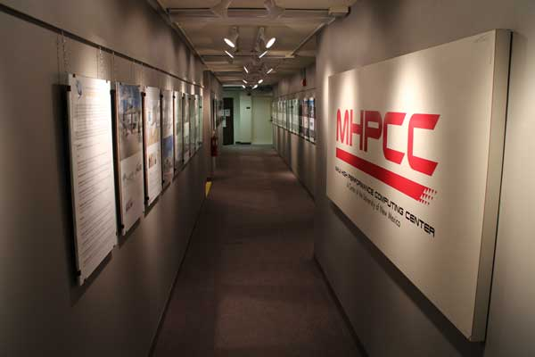

Center History

A Brief Chronology of Significant Events and Accomplishments1993 Profs. Frank Gilfeather, Brian Smith, and John Sobolewski establish the MHPCC (Maui High Performance Computing Center), in Kihei, HI, in support of the DoD High Performance Computing Modernization program.
1994 The Albuquerque Resource Center (ARC), later renamed the Albuquerque High Performance Computing Center (AHPCC), is established in the historic Galles Building, along with the High Performance Computing Education and Research Center (HPCERC), an umbrella organization spanning MHPCC and AHPCC.
1996 NSF Chautauqua meeting hosted at UNM by AHPCC.
1999 Roadrunner, the first Linux cluster available via NSF national allocation, is installed. Roadrunner is integrated by a small company in Sandy, Utah (Alta Tech; subsequently known as Linux Networx).
1999 The Access Grid (AG) Internet teleconferencing system is installed at UNM and the first-ever AG session is hosted by UNM.
2000 Los Lobos "supercluster," comprising 512 processors with Myrinet commodity fast interconnect, is installed at UNM. This is the first-ever Linux production system built by IBM. During the inauguration, IBM announces their Linux strategy for future product offerings. Los Lobos becomes the highest-ranked open Linux cluster in the world in the subsequent Top 500 list (narrowly edging out the Sandia National Laboratories Cplant cluster). The ranking of Los Lobos places UNM among the top five universities in the world in campus compute power. Los Lobos is made available to national users through the NSF National Computational Science Alliance, an early predecssor of the XSEDE network of NSF supercomputer centers.
2000 Vista Azul coupled compute/visualization system deployed under an IBM Shared University Research (SUR) award (PI Prof. Brian Smith, Computer Science).
2003 Prof. Marc Ingber (Mechanical Engineering) is named Director; Center is renamed HPC@UNM.
2003 UNM Cancer Center GenomeDW genomics data warehouse is designed and deployed on the CARC Delphi parallel Oracle server.
2004 Prof. Barney Maccabe (Computer Science) named Director; Dr. Tim Thomas (Physics and Astronomy) is named Deputy Director.
2005 Dedication of a new, state-of-the-art, 1500 sq ft machine room. Extensive Galles Building renovation to construct machine room also provides new office and studio space for the ARTS (Art, Research, Technology and Science) Lab.
2007 Prof. Tom Caudell (Electrical and Computer Engineering) is named Director.
2009 Prof. Susan R. Atlas (Physics and Astronomy) is named Director; Center is renamed UNM Center for Advanced Research Computing.
2010 Prof. Andrea Polli (Interdisciplinary Film & Digital Media Program) and students take advantage of the Galles Building's 25' ceilings to construct the e-Oculus public media-commissioned installation on-site at CARC. The piece debuts at the "Knowledge Representation & Discovery" event in conjunction with the comission of the RSC storage system at the Center. The e-Oculus work is now on permanent display at the University of Utah Eccles School of Business.
2010 The UNM Research Storage Consortium, including four NSF-funded Projects and Centers (DataONE, Long-Term Ecological Research, Earth Data Analysis Center, and CARC) and University Libraries, purchases and installs 281 TB (RAID5 usable) HP X9000 research storage system. At the time of its deployment, the RSC system is the most densely-populated HP storage system in the world.
2011 Supercomputing '11 coupled media demonstration links video (Prof. Jack Ox, Music) and voice (Prof. Kristen Loree, Theater and Dance) in performance of Kurt Schwitter's Ursonate across 1,568 mi between Albuquerque and Seattle, over the National Lambda Rail.
2011 CARC Gallery opening debuts with the CARC Gallery Exhibition Spring 2011, which presented three graduate students whose work represents the variety of interdisciplinary and multimedia approaches of students who study with CARC Associate and Social Media Workgroup Director Andrea Polli.
2012 Metropolis repurposed LANL supercomputer donated to CARC by the New Mexico Consortium, under the auspices of the NSF-supported PRObE project.
2013 Commissioning of 200-node "green" Galles Beowulf cluster and Hadoop subsystem.
2013 Supercomputing '13 BD2K ("Big Data to Knowledge") video showcases data-intensive research by nine faculty and researchers at UNM as they discuss the complexities and challenges involved in the process of translating very large datasets into new discoveries and understanding.
2014 Ulam repurposed LANL supercomputer donated to CARC by the New Mexico Consortium, under the auspices of the NSF-supported PRObE project, bringing CARC aggregate core count to 2,200; 15 TFlops peak.
2014 Dedicated Science DMZ 10 Gbps cross-campus network connection is established with support from UNM IT, linking UNM Cancer Center high-throughput genomic sequencer with RSC storage system.
Center for Advanced Research Computing
MSC01 1190
1601 Central Ave. NE
Albuquerque, NM 87106
p: 505.277.8249
f: 505.277.8235
e: info@carc.unm.edu
© 2014 The University of New Mexico, Albuquerque, NM 87131, (505) 277-0111
New Mexico's Flagship University